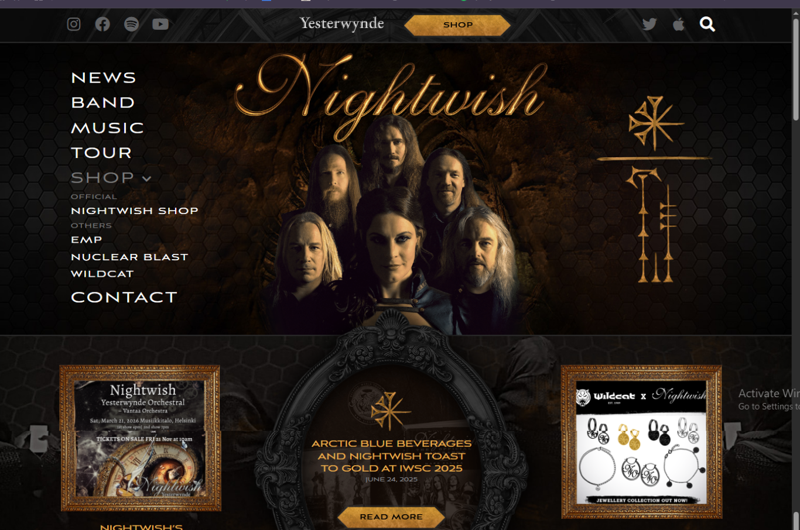
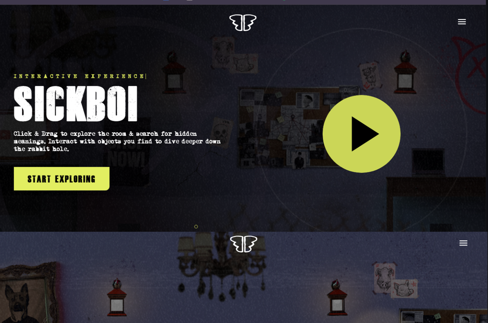

Typography Article
Introduction
Typography is one of the most important parts of web design because it affects readability, mood, organization, and user experience. The style, size, spacing, and arrangement of text can greatly influence how users feel about a website and how easily they can understand information. Good typography creates clarity and visual balance, while poor typography can make a page difficult or unpleasant to read.
In this article, I will compare websites that use typography effectively with websites that use typography less effectively. I will discuss how font choices, text layout, spacing, and readability affect the overall design and usability of each page.
Website One
Website Link: Nighwish Website

I’m comparing two sites of musicians I very much enjoy. The first is the band Nightwish, a symphonic metal band that plays very dramatic, bombastic, almost operatic music, much of which could score some great fantasy epic. The band has been around for almost 40 years and has a pretty traditional website.
The Nightwish website uses decorative serif-style typography that reflects the band’s fantasy and symphonic metal identity. The font features elegant, dramatic letterforms with sharp edges and flowing details that evoke a sense of mystery, mythology, and epic storytelling. Large headings and stylized text help establish a cinematic atmosphere that matches the emotional and orchestral style of the band’s music. The typography feels powerful and immersive while still remaining readable enough for navigation and content sections.
The Nightwish website has several typography strengths that support the band’s fantasy and symphonic metal style. The decorative fonts, dramatic headings, and dark visual design create a powerful atmosphere that feels cinematic and immersive. The typography helps reinforce the band’s identity and makes the website visually memorable. However, the site also has some weaknesses. Certain sections feel visually crowded due to the dense layout and the large amount of content displayed together. Decorative fonts are effective for branding, but in some contexts they can compromise readability, especially when paired with textured backgrounds or smaller text. While the typography successfully creates mood and personality, a simpler layout and cleaner text spacing could improve readability and navigation for users.
Website Two
Website Link: Ren Gill's Website

The typography used on Ren Gill’s website reflects the emotional intensity and artistic individuality found throughout his music. The site uses bold typography, dramatic spacing, and cinematic visual presentation to create a feeling that is personal, expressive, and emotionally raw. Large text and strong visual contrast immediately draw attention and help communicate the intensity of the themes explored in his music, including mental health struggles, physical illness, and personal conflict.
The typography also supports Ren’s anti-establishment and anti-corporate themes. Instead of using a clean corporate style, the website feels more artistic and unconventional. The text placement, layered visuals, and atmospheric presentation create a sense of rebellion and individuality that matches the tone of his music and videos. The typography feels less like traditional advertising and more like part of a creative performance experience.
Ren’s music combines many different genres, including rap, rock, acoustic music, and theatrical storytelling, and the website typography reflects this eclectic style. Different text sizes, dramatic headings, and visually expressive layouts help create a dynamic and immersive experience for the viewer. The typography works together with the imagery and dark color palette to create a website that feels emotional, modern, and artistically unique.
Comparison
The Nightwish and Ren Gill websites use typography in very different ways to support their artistic identities and connect with their audiences. The Nightwish website uses decorative serif fonts and dramatic, fantasy-inspired headings that create an epic, cinematic atmosphere rooted in mythology and symphonic metal. In contrast, Ren Gill’s website uses bold modern typography, large text, and expressive layouts that feel more personal, emotional, and unconventional. While Nightwish focuses on fantasy, elegance, and theatrical storytelling, Ren’s typography reflects emotional intensity, individuality, and anti-establishment themes. Both websites use typography effectively to strengthen branding and mood, but they create very different emotional experiences for users.
Conclusion
Typography plays a major role in successful web design. By comparing different websites, it becomes clear that font choices and text layout can strongly influence how users interact with a page. Well-designed typography improves readability, supports the purpose of the website, and creates a more enjoyable user experience.